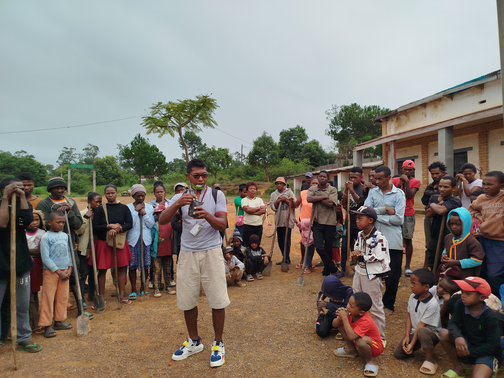
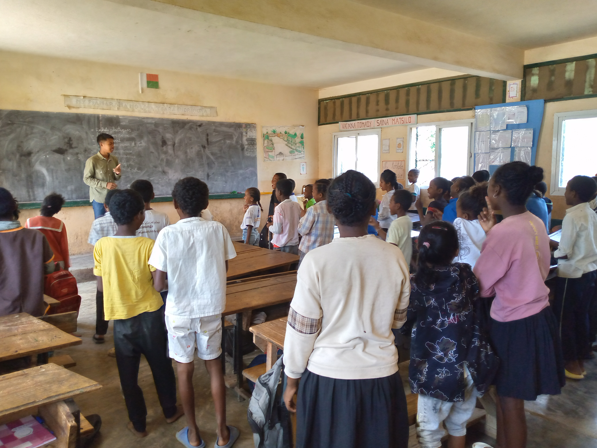

Génération Pro-Nature (GPN) est une organisation non gouvernementale malgache engagée dans l'éducation environnementale. Fondée par une équipe de jeunes passionnés suite à la constatation que Madagascar est très riche en biodiversité qui est pourtant très menacée.
L'ONG travaille en milieu scolaire et communautaire pour faire évoluer les comportements face aux enjeux de pollution, de gestion des déchets et de développement durable.
Voir plusÀ travers nos projets phares - Zaza Green, TAMIMA (Tanana Miara-Mandray), le reboisement scolaire et le programme WASH - nous créons un écosystème complet qui sensibilise les enfants à l'environnement, mobilise les communautés, restaure les espaces verts et améliore l'accès aux services essentiels d'eau et d'assainissement pour un développement durable et inclusif.
Voir plus